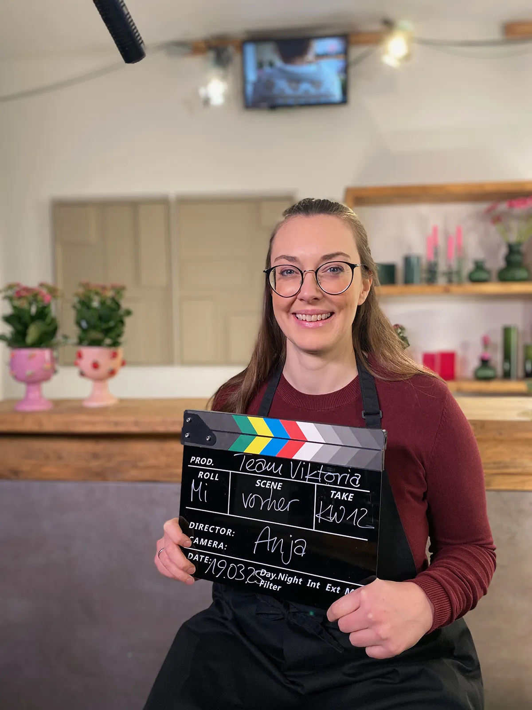
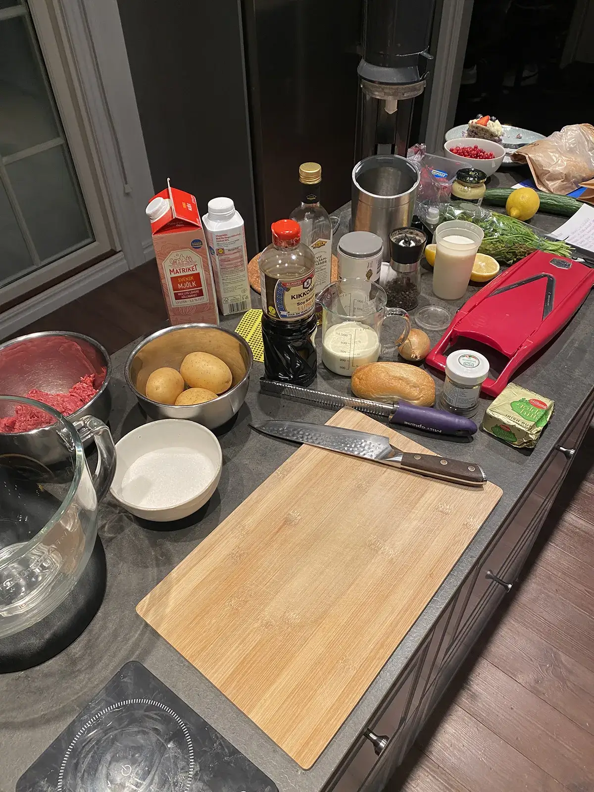
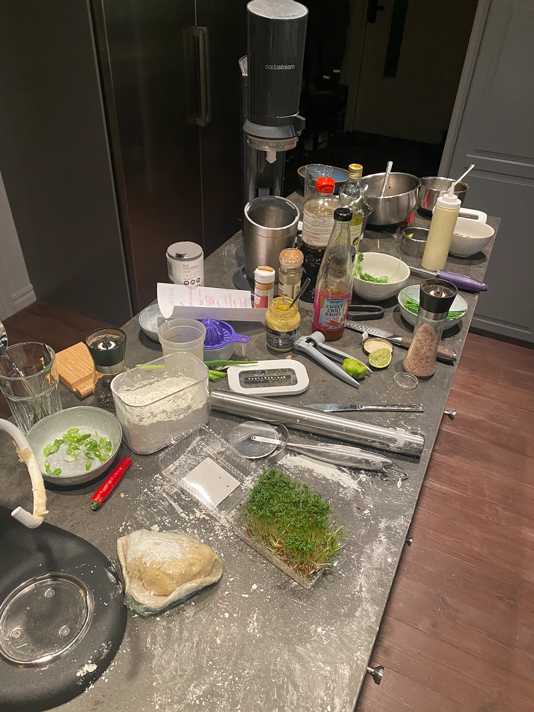
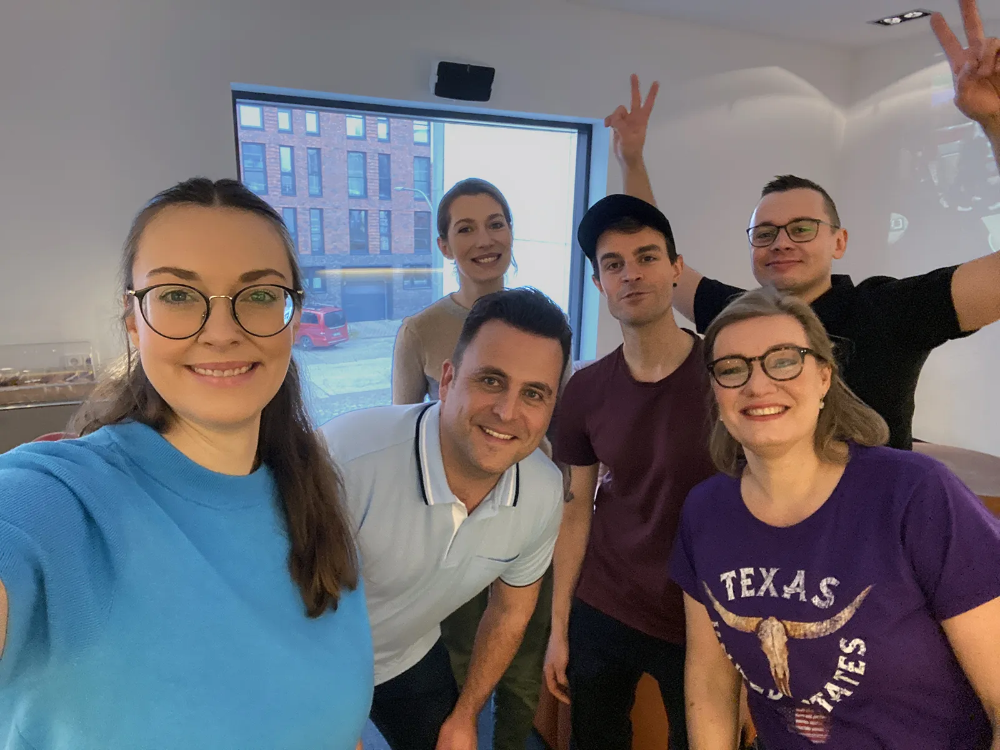
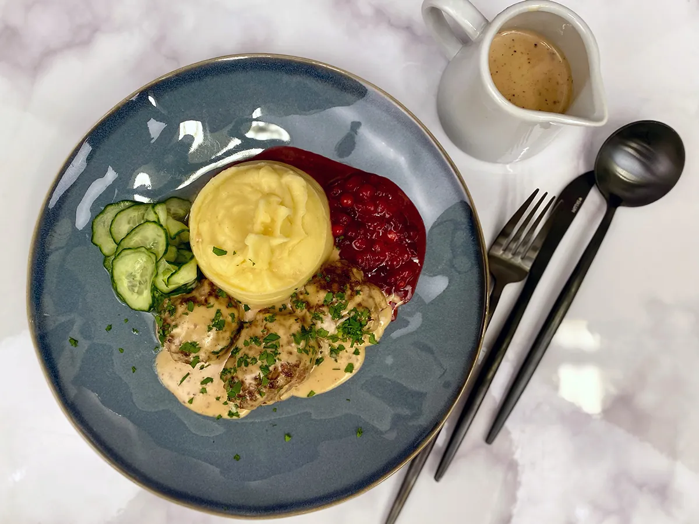

Welcome to my kitchen! Cooking is a real passion of mine. For me, food is about more than eating:
it's a way to unwind, recharge and get creative. Here, I'll share a little of that world with you,
from the story behind my food blog, Bauchgefühl Rezepte, to favourite recipes and my unexpected
adventure on ZDF's cooking show Die Küchenschlacht.
As a little girl, I loved watching my mum and grandma cook, and helping out whenever I could. At
home, we mostly ate honest, traditional Swabian food, with the occasional Mediterranean classic.
That early love of cooking stayed with me while I studied to become a teacher in Schwäbisch
Gmünd. Whenever I had the time, I was in the kitchen. I've also loved watching cooking shows for
years; they always give me new ideas to try.
During the pandemic, I finally had the idea to start my own food blog, Bauchgefühl Rezepte. I
began photographing my dishes, learning how to edit the images, writing down recipes and
building a presence on Instagram.
The name Bauchgefühl Rezepte, which roughly means "recipes by instinct," sums up how I cook: I
rarely follow a recipe to the letter and usually trust my instincts instead. Food is a big part
of life, and I want it to bring joy and leave you feeling good. When I was teaching, cooking
after a long day at school was the perfect way to unwind. In the kitchen, I could switch off and
focus on flavours and combinations.
Alongside regional dishes from home, I love experimenting with food from around the world,
whether it's Asian, Mexican or Italian. My partner and I also bring home plenty of inspiration
from our travels, where enjoying the local food is always high on the list.
Recipes
Some favourites from my kitchen
Here are a few recipes I love sharing on Bauchgefühl Rezepte. From savoury meals to sweet treats,
I hope you'll find something new to try!
A real highlight of my cooking journey was taking part in Die Küchenschlacht, a German TV
cooking show on ZDF. I got to put my cooking to the test and learn a lot along the way.
Cooking in a professional setting was a fun challenge, and it pushed me to grow in the
kitchen.

01Applying for the show
The application
I'd been watching Die Küchenschlacht for years, often finding inspiration for my own
cooking. I thought about taking part many times, but never quite dared to apply.
Then, in September 2024, I finally went for it and sent in my application. Things
moved quickly: after I was accepted, I was already on a flight to Hamburg in January
2025 to film the spring week with professional chef Viktoria Fuchs.
02Recipe testing
Testing every detail
Once I was accepted, it was straight into recipe development. I had to submit my
own dishes for Monday to Wednesday: a favourite dish, a starter and a vegetarian
dish. We only found out the Thursday theme, "Spring Cooking," a week before
filming. At home, I practised every dish against the clock, wrote detailed
step-by-step plans and tried out different ways to plate everything. I wanted to
make the most of our 35 minutes of cooking time in front of the cameras.

Practising at home for my first dish: Swedish meatballs

The kitchen after practising my second dish: tuna tartare
03In the studio
Filming days
The studio had an incredible atmosphere, but cooking on an unfamiliar ceramic hob
(I use induction at home) while answering the host's questions was a real
challenge. I was nervous, of course, but as the week went on, everything started
to fall into place.
Plating a dish in the TV studio
Favourite dish
Day 1
Getting used to a new hob took some adjustment, but my Swedish meatballs
earned me a solid second place from judge Thomas Martin.
Starter
Day 2
Feeling much more relaxed, I served an Asian-inspired tuna tartare and won
the day with judge Sara Henke.
Vegetarian
Day 3
My Peruvian causa with sweet potato and grilled avocado won over Swedish
judge Titti Qvarnström, earning me another win.
"Spring Cooking"
Day 4
My most ambitious dish, spinach dumplings with Arctic char, pushed me to the
limit in 35 minutes. It was intense, but judge Zora Klipp loved it: my third
win of the week!
04The final & looking back
The final and my personal takeaway
After three daily wins, I was excited to reach Friday's final. The challenge was
to recreate Viktoria Fuchs's final dish: pan-fried guinea fowl breast with
spring herb risotto and morel cream sauce. I hit a few bumps along the way and,
in the end, my seasoning could have used a little more polish. Judge Milena
Broger still awarded my plate an excellent second place for the week.
I was a little disappointed not to make it into Champions Week, but the
experience, the wonderful crew behind the scenes and the friendships in our
group of cooks made the whole week unforgettable!

An unforgettable week with my cooking group backstage at Die
Küchenschlacht
Recipes from the show
The dishes I cooked during my week on the show
MondayFavourite dish

Swedish meatballs with brown sauce, mashed potatoes, pickled cucumber
& lingonberries